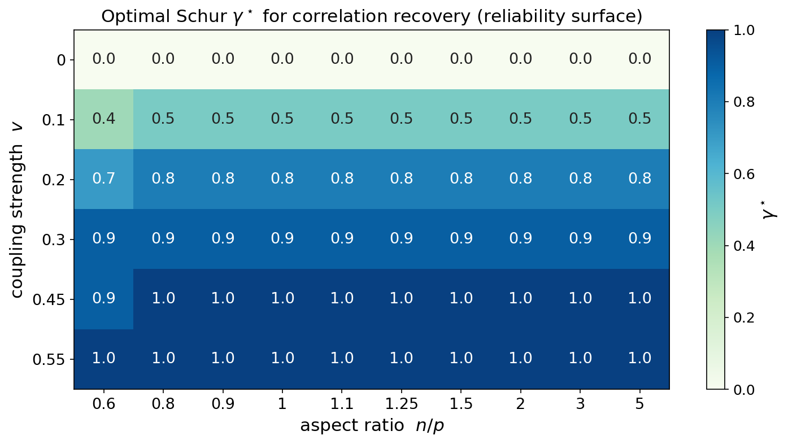
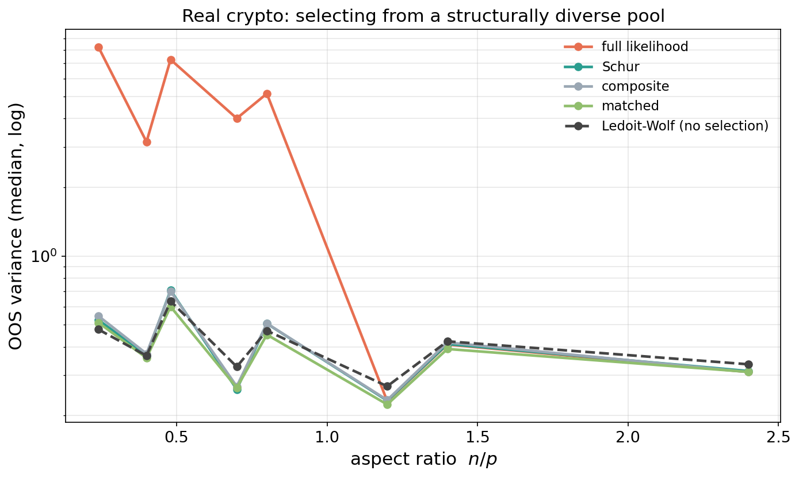
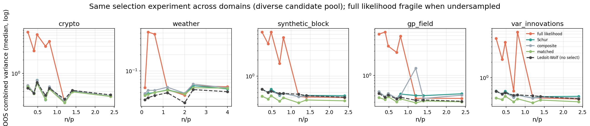
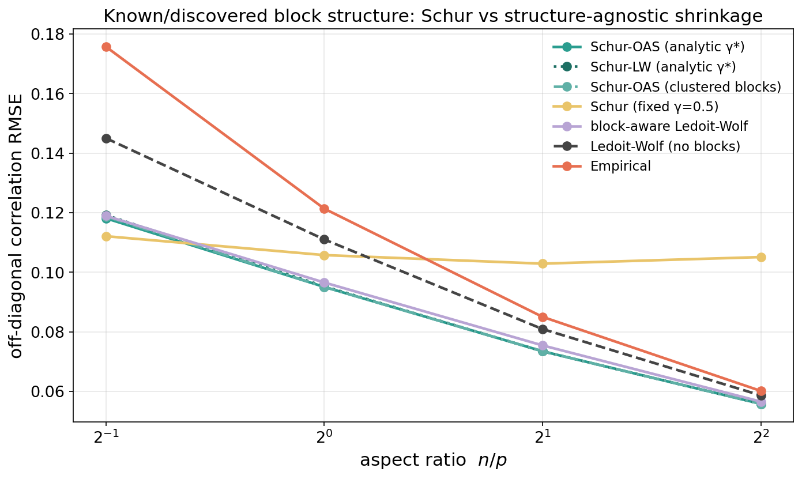

We introduce the Schur pseudo-likelihood, a one-parameter family that damps the cross-block coupling of the Gaussian likelihood through its Schur complements, for scoring and regularizing covariance and correlation estimates in high dimensions. The Gaussian log-likelihood is the standard criterion, but when the dimension rivals the sample size it is governed by the smallest, least-identifiable eigenvalues of the estimate, and as a criterion for ranking or selecting estimates it becomes unreliable; damping the coupling restores it. The optimal damping has a closed form—the reliability of the coupling, a James–Stein shrinkage. On real crypto returns, choosing a shrinkage estimate by the Schur pseudo-likelihood rather than by the full likelihood yields several-fold lower out-of-sample portfolio variance once the dimension rivals the sample size.
A correlation matrix is the hard part of a covariance matrix: variances are a one-dimensional, per-series problem, while the high-dimensional difficulty—the near-singular spectrum and the unstable inverse—lives in the correlation. The standard way to judge a correlation (or covariance) estimate \widehat{R} is the log-likelihood it assigns to held-out data, \ell(\widehat{R}) = -\tfrac12(\log\det\widehat{R}+ \operatorname{tr}(\widehat{R}^{-1}S)) for a test covariance S. Both terms are governed by the smallest eigenvalues of \widehat{R}: \log\det\widehat{R}=\sum_i\log\lambda_i diverges as any \lambda_i\to0, and \widehat{R}^{-1} diverges with it. When p rivals n those eigenvalues are unidentifiable (the Marčenko–Pastur regime), so the likelihood is dominated by the least reliable part of the spectrum (Ledoit and Wolf 2004; Bun et al. 2017). As a criterion, it then fails: in a controlled experiment in which the truth is known, the held-out likelihood ranks the better of two estimates below chance, whereas inversion-free criteria such as Frobenius distance and the variogram score (Scheuerer and Hamill 2015) exceed 80\%. This is the evaluation-side analogue of the instability of the minimum-variance portfolio w\propto\widehat{R}^{-1}\mathbf1, which fails through the same inverse. The remedy is to discount that inverse—continuously, through one interpretable parameter, rather than by discarding the cross-block structure outright.
Partition the variables into K ordered blocks. The Gaussian density factors exactly into block conditionals, p(x)=\prod_k p(x_k\mid x_{<k}), each Gaussian with covariance the Schur complement S_k \;=\; R_{kk} - R_{k,<k}\,R_{<k,<k}^{-1}\,R_{<k,k}, \qquad \mu_{k\mid<k} = R_{k,<k}R_{<k,<k}^{-1}x_{<k}, so \log\det R=\sum_k\log\det S_k and the likelihood is a sum of block-conditional terms, each inverting only the conditioning block (Vecchia 1988; Katzfuss and Guinness 2021). We damp the coupling by \gamma\in[0,1], S_k(\gamma) = (1-\gamma)\,R_{kk} + \gamma\,S_k, \qquad \mu_{k\mid<k}(\gamma) = \gamma\,R_{k,<k}R_{<k,<k}^{-1}x_{<k}, and score \ell_\gamma(R;x)=\sum_k\log\mathcal N(x_k;\mu_{k\mid<k}(\gamma),S_k(\gamma)). At \gamma=1 this is the exact joint likelihood; at \gamma=0 it is the block-diagonal composite likelihood (Besag 1975; Lindsay 1988; Varin et al. 2011); intermediate \gamma inverts no block larger than a conditioning set and is better conditioned. The same \gamma interpolates an allocation rule, from hierarchical risk parity at \gamma=0 (López de Prado 2016) to minimum variance at \gamma=1 (Cotton 2024).
In a tractable two-block model—x_2=bx_1+\varepsilon with conditional R^2 equal to \rho^2—minimising the expected predictive residual of the damped score gives a closed form, \gamma^\star \;=\; \frac{b^2}{b^2+\operatorname{Var}(\hat b)} \;=\; \frac{(n-2)\,\rho^2}{(n-2)\,\rho^2+(1-\rho^2)}, the reliability of the estimated coupling: a Wiener/James–Stein shrinkage (James and Stein 1961; Ledoit and Wolf 2012). It tends to 1 as n\to\infty or \rho^2\to1 and to 0 as \rho^2\to0, and is interior when the coupling is partially reliable. The empirical optimum tracks it: sweeping a synthetic block correlation’s coupling strength v against the aspect ratio n/p (Figure 1), the \gamma minimising recovery error rises monotonically with v, from 0 (no coupling) to 1 (strong coupling), and dips where samples are scarcest—the reliability law, recovered across the plane.

The decisive test of a scoring rule is whether the estimate it prefers generalizes. We test it on real daily crypto returns (72 liquid assets) with a same-frequency, disjoint-split design that avoids both look-ahead and the cross-frequency (Epps) attenuation that confounds naive hourly-versus-daily comparisons: days are partitioned at random into a training set, a validation set (on which each scoring rule chooses among a structurally diverse pool of candidate estimates—empirical, identity, OAS, Ledoit–Wolf, factor models of several ranks, and block-Schur estimates), and a held-out test set. The external criterion is the realized variance of the minimum-variance portfolio formed from the selected estimate—neither scoring rule, so the comparison is not circular. We use a structural pool, not a one-dimensional shrinkage ladder, precisely so that “a good scoring rule” cannot reduce to “select more shrinkage.”
A clear split emerges (Figure 2). When n/p\le1 the inverse-heavy scores select fragile estimates: the full likelihood and Stein loss give median out-of-sample variance roughly an order of magnitude higher than the rest, and tend to pick the raw empirical estimate. The inverse-discounting scores—the Schur pseudo-likelihood, the composite likelihood, and the matched GMV criterion—instead select a structurally sensible estimate (most often a low-rank factor model capturing the market factor) and cluster near the safe optimum. The honest qualifier is the baseline: against a parameter-free batch Ledoit–Wolf that uses no held-out selection at all, Schur-selection is a tie (within a few percent across the range). So the win is over the full likelihood—which fails as a high-dimensional criterion—rather than over good shrinkage; selecting by \ell_\gamma does not beat simply shrinking well. What it shares with good shrinkage is exactly “discount the inverse,” and the Schur dial is the principled, closed-form way to do so. Whether that dial can be turned to beat structure-agnostic shrinkage is the subject of the next two sections.

The minimum-variance portfolio is one instance of w\propto\Sigma^{-1}\mathbf1; forecast combination (Markowitz 1952), Gaussian-process regression, and Kalman filtering are others, and all are tuned by the same log-det-plus-quadratic likelihood—indeed scalable GPs already use the block-conditional (Vecchia) factorization (Vecchia 1988; Katzfuss and Guinness 2021) on which \ell_\gamma is built. We therefore run the identical selection experiment on residual panels from five domains: daily crypto returns; real numerical-weather forecast residuals (archived forecast minus ERA5 reanalysis) on a 323-point CONUS grid; draws from a known block correlation and from a spatial Gaussian-process kernel; and the innovations of a stable vector autoregression (Kalman-style residuals). In every domain, when n/p\le1, selecting by the full likelihood gives higher out-of-sample combined-residual variance than selecting by the Schur pseudo-likelihood (Table 1, Figure 3)—by roughly an order of magnitude in every domain—while the inverse-discounting scores cluster near the safe optimum. As on crypto, the honest qualifier is that Schur-selection only ties a parameter-free batch Ledoit–Wolf (last column \approx1): the win is over the full likelihood, not over good shrinkage. The pathology and its remedy are thus not financial: wherever a high-dimensional covariance is inverted to combine correlated signals, the full likelihood is a fragile selection criterion and any inverse-discounting choice—Schur or plain shrinkage—avoids it.
| domain | full-likelihood / Schur | batch Ledoit–Wolf / Schur |
|---|---|---|
| crypto (portfolio) | 12.7 | 0.97 |
| Gaussian-process field | 13.1 | 0.95 |
| VAR innovations (Kalman-style) | 10.2 | 1.02 |
| synthetic block correlation | 10.2 | 1.01 |
| weather forecast residuals (CONUS) | 12.3 | 0.86 |

That Schur ties generic shrinkage but does not beat it suggests the dial has not been turned to its optimum—we used a fixed \gamma. The fix is to estimate \gamma the Ledoit–Wolf way. Shrinking the cross-block entries toward zero, the Frobenius-optimal keep fraction is, in closed form, \gamma^\star \;=\; \frac{\sum_{\text{cross}}\sigma_{ij}^2} {\sum_{\text{cross}}\bigl(\sigma_{ij}^2+\operatorname{Var}(s_{ij})\bigr)} \;=\; 1-\delta^{\mathrm{LW}}_{\text{cross}}, i.e. Ledoit–Wolf shrinkage applied to the cross-block block alone, whose keep fraction is exactly the coupling reliability of Section 3—now data-estimable, hence adaptive in n. Estimating \operatorname{Var}(s_{ij}) by the empirical fourth moment gives Schur–LW; by the Gaussian finite-sample variance \operatorname{Var}(r_{ij})\approx(1+r_{ij}^2)/n (less noisy at small n, in the spirit of OAS (Bun et al. 2017)) gives Schur–OAS.
We test recovery on a structured correlation in the spirit of options grouped by underlying—G=10 groups of m=6 members, strong within-group and weak cross-group coupling—against a fair block-aware Ledoit–Wolf (shrinkage toward a block-constant target) as well as structure-agnostic shrinkage. The blocks are not assumed known: they are recovered by clustering the (shrunk) training correlation, the premise of hierarchical risk parity (López de Prado 2016), which succeeds almost perfectly here (adjusted Rand index \approx0.99 even at n/p=0.5, so clustered blocks match the oracle). Table 2 reports off-diagonal recovery error.
| n/p | \widehat\gamma | Schur–OAS | Schur (fixed \gamma{=}\tfrac12) | block-aware LW | batch LW | empirical |
|---|---|---|---|---|---|---|
| 0.5 | 0.59 | 0.118 | 0.112 | 0.119 | 0.145 | 0.176 |
| 1.0 | 0.66 | 0.095 | 0.106 | 0.097 | 0.111 | 0.121 |
| 2.0 | 0.76 | 0.073 | 0.103 | 0.075 | 0.081 | 0.085 |
| 4.0 | 0.84 | 0.056 | 0.105 | 0.057 | 0.059 | 0.060 |
The data-driven \widehat\gamma climbs from 0.59 to 0.84 as n grows—the reliability law, estimated rather than assumed—so Schur–OAS tracks the best estimator across the whole range, fixing the over-damping of a fixed \gamma (stuck near 0.10 once well sampled) while keeping its undersampled edge. It beats structure-agnostic shrinkage throughout and edges block-aware Ledoit–Wolf once adequately sampled, with clustered blocks performing as well as the oracle. Two honest caveats: the margin over block-aware Ledoit–Wolf is small (a few percent), so the result is “a principled, parameter-free analytic estimator competitive with the best block-aware shrinkage,” not a rout; and at the most undersampled corner (n/p=0.5) the analytic \widehat\gamma is slightly high, where a fixed smaller \gamma still wins narrowly. The substance is that the coupling reliability—the paper’s \gamma^\star—is a Ledoit–Wolf-style estimable quantity, turning the Schur dial into a closed-form, block-aware shrinkage estimator with no tuning.

The damping is a structured shrinkage: S_k(\gamma)=(1-\gamma)R_{kk}+\gamma S_k, a convex combination of positive-definite matrices, pulls each conditional covariance toward its unconditional block. This raises the smallest eigenvalues and lowers the condition number relative to the full likelihood, and yields a usable inverse even when the empirical correlation is singular (n<p); the block-diagonal endpoint is positive definite whenever the blocks are. Where the linear interpolation can itself approach singularity—near a vanishing Schur complement under strong coupling—the affine-invariant SPD-geodesic interpolation lifts the small eigenvalues multiplicatively and stays well conditioned by construction. This conditioning is the method’s general high-dimensional benefit: the same \gamma that maximises the pseudo-likelihood regularizes any downstream use of the inverse, the evaluation-side analogue of eigenvalue shrinkage (Ledoit and Wolf 2004, 2012; Bun et al. 2017).
Three honest boundaries. First, as a scoring rule the contribution is sharp and robust: the full Gaussian likelihood fails as a high-dimensional selection criterion (an order of magnitude worse out-of-sample, across five domains), and \ell_\gamma—like any inverse-discounting score—does not. But \ell_\gamma-selection only ties a parameter-free batch Ledoit–Wolf; it does not beat good shrinkage. Second, as an estimator, fixed-\gamma Schur is regime-specific, but the analytic Schur–Ledoit–Wolf of Section 6—closed-form \gamma^\star= reliability—is a competitive, tuning-free block-aware shrinkage when the blocks are known or (equivalently here) discovered by clustering; on dense, unstructured data it simply reverts toward plain shrinkage. It is competitive with, not dominant over, the best block-aware shrinkage. Third, the optimal damping inverts with the target—recovering the matrix wants large \gamma, recovering its inverse (partial correlations) wants small \gamma—so “best” is undefined until the target is named. The durable contributions are the diagnosis, the closed-form reliability that unifies scoring, regularization, and allocation, and the resulting parameter-free Schur–Ledoit–Wolf estimator.
The Schur pseudo-likelihood is a one-knob interpolation between decoupled and full Gaussian scoring whose optimal setting is the closed-form reliability of the cross-block coupling. In high dimensions the Gaussian likelihood is dominated by unidentifiable small eigenvalues and fails as a selection criterion—by an order of magnitude out-of-sample, across portfolios, weather forecast residuals, Gaussian-process fields, and Kalman-style innovations alike—while any inverse-discounting score avoids the failure. The same reliability that governs the score has a Ledoit–Wolf form, yielding a parameter-free, block-aware shrinkage estimator (Schur–Ledoit–Wolf) that adapts its coupling trust to the data and is competitive with the best block-aware shrinkage when structure is present or discovered. The honest summary is modest but unified: discount the inverse in high dimensions, do it by the coupling reliability, and the same closed form serves scoring, regularization, and allocation.